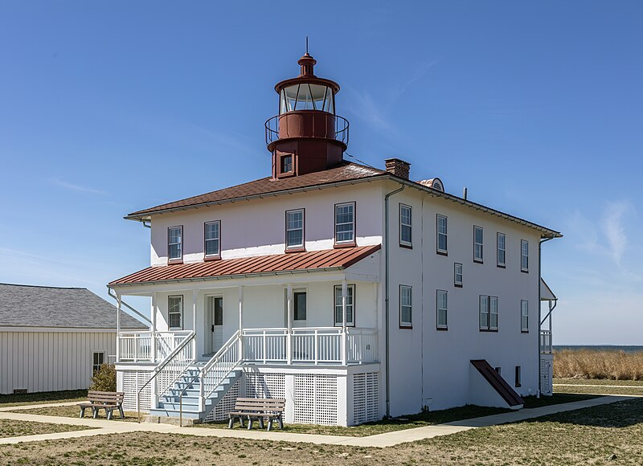

This Strategic location on Maryland's shore on the Chesapeake bay allowed colonists to monitor british war ships.
Lighthouse constructed in 1830 to guide maritime traffic through the Chesapeake Bay.
Point Lookout was a military installation operated by Union forces on a strategic point between the Potomac River and Chesapeake Bay.
Point Lookout State Park has a significant historical value that contributes to the story of the development of the United States.
Point Lookout played a big contributing role in winning the war of 1812.
Point Lookout tells stories from multiple different perspectives.
During the Civil war, many caputred confederate soldiers were sent to Point Lookout.
Living conditions were poor for the prisoners, with only tents for shelter, exposure to disrease, and starvation.
Nearly 4000 Prisoners of war died at the camp.
The Confederate Army was strongly opposed against Point Lookout.
This is shown by Maryland Confederate General Bradley T. Johnson who attempted to raid the prison.
The goal of the raid was liberating the captured prisoners, give them weapons
and storm Washington D.C.
Point Lookout is preserving the historical perspectives and stories in a variety of ways.
Point Lookout State Park is a speical place where you can feel America's history come to life.
Preserving this history can help us better understand how people faced tough times in the past
to make things better.